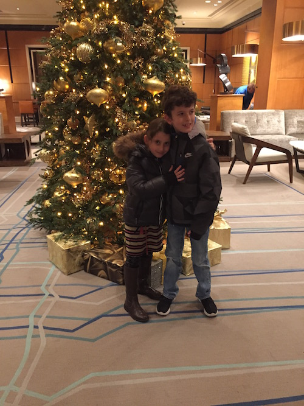

The last day of the vacation brought our visit to the Exploratorium an amazing and interactive science and technology museum in San Francisco right on the bay. My favorite exhibit was the gyroscope demo - the whole museum was small interactive stations with mostly physics demonstrations. For example, how prisms work, how high travels, how inertia works.
We couldn't leave SF without Dim Sum- so we waited in a REALLY long line and had an amazing meal at Yank Sing.
Our last stop in SF was a big playground right in the middle of the city. I was really sad to end the vacation, I loved spending so much time with my cousin and wish they lived in NY.
Today we headed home!
Exploratorium website